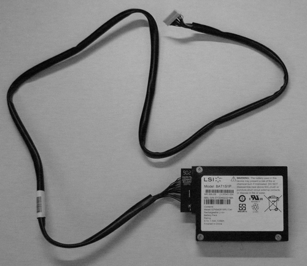
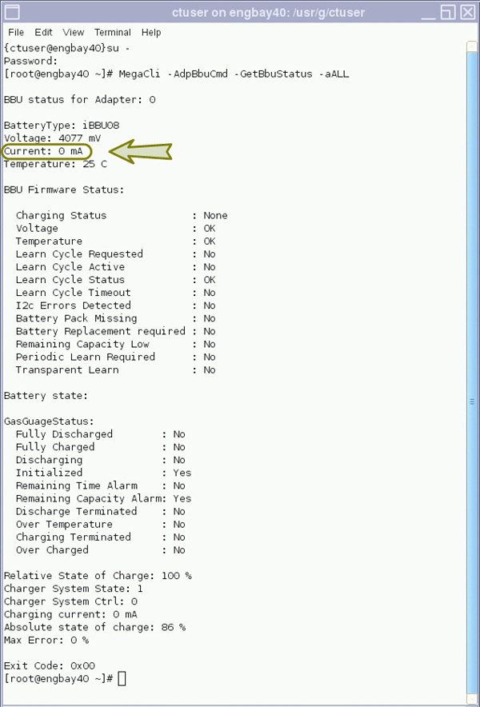
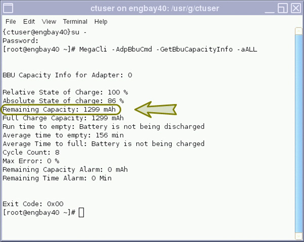

Operating Documentation
Direction 5193574-800, Rev# 22
LightSpeed 7.X Service Methods
Module Version 1.0, Version Date 7/24/13
Operating Documentation |
| Required Persons | Preliminary Reqs | Procedure | Finalization |
|---|---|---|---|
| 1 | Not Applicable | 20 mins | Not Applicable |
This document describes the steps necessary to check the functionality and charge capacity of the RAID Controller Battery Backup Unit (BBU). This BBU has a limited life expectancy of five (5) years and gradually looses charge capacity over time. The following steps will instruct how to check this BBU and how to determine when replacement is needed.
Illustration 1: RAID Controller BBU - LSI iBBU08

| Condition | Reference | Effectivity |
|---|---|---|
Only trained service personnel should service the GE Scanner. | - | - |
The following commands will gather status and battery capacity information.
Open a Terminal Window, and log on as root:
Type: {ctuser@hostname} su - and press <ENTER>.
Type the root password and press [ENTER].
Execute the following commands:
Type: [root@hostname]# MegaCli -AdpBbuCmd -GetBbuStatus -aALL and press <ENTER>.
Illustration 2: Sample Output for “GetBbuStatus” Command

Type: [root@hostname]# MegaCli -AdpBbuCmd -GetBbuCapacityInfo -aALL and press <ENTER>.
Illustration 3: Sample Output for “GetBbuCapacityInfo” Command

To determine if a battery is approaching End Of Life (EOL), one needs to look at the capacity, when the battery is fully charged. If the capacity is below 500mAh, and the battery current = 0 (0 current indicates battery is fully charged), then one can assume that the battery is approaching end of life. This information can be obtained using two of the MegaCLI battery commands shown above.
Look at the Current: value from the “GetBbuStatus” command output. Value shall equal “0 mA” when BBU fully charged.
Look at the Remaining Capacity: value from the “GetBbuCapacityInfo” command output. Value shall be greater than “500 mAh”.
Compare these values to Table 1 below to determine the BBU Status for replacement.
Table 1: BBU Replacement Status
| Parameter | Values | |||
| Current | = 0 mA | > 0 mA | = 0 mA | > 0 mA |
| Remaining Capacity | > 500 mAh | > 500 mAh | < 500 mAh | < 500 mAh |
| Status | Good | Charging/Good | EOL | Charging |
If status indicates the BBU is approaching End of Life, replace the BBU.
If status indicates the BBU is in charging mode and below 500 mAh capacity, check again in a hour. A full charge sequence should only take 3 to 4 hours.
No finalization steps.